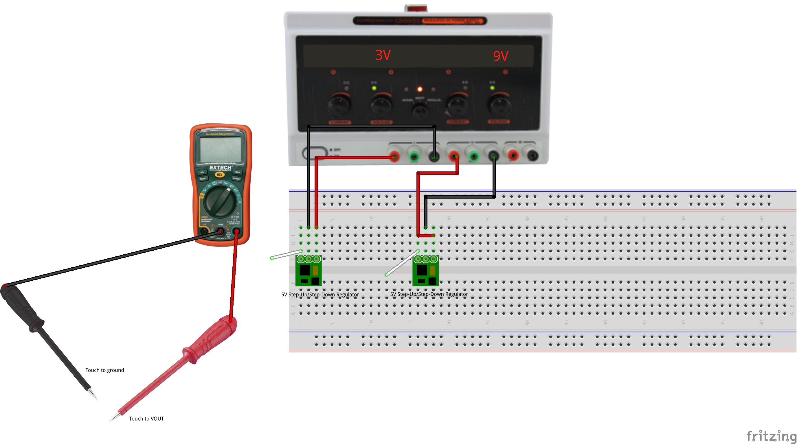
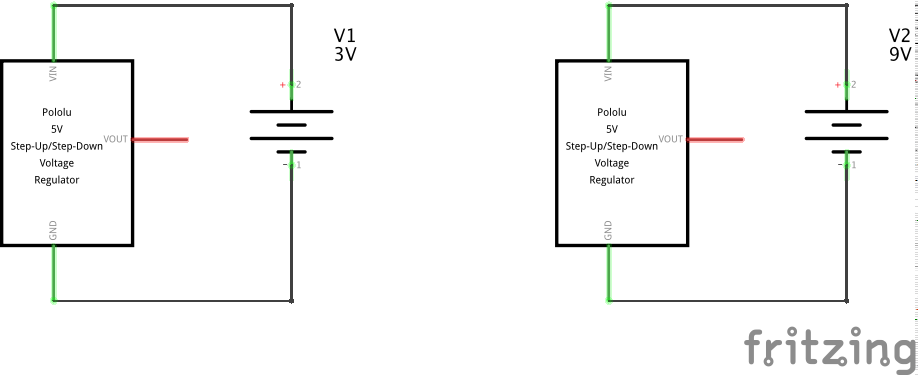
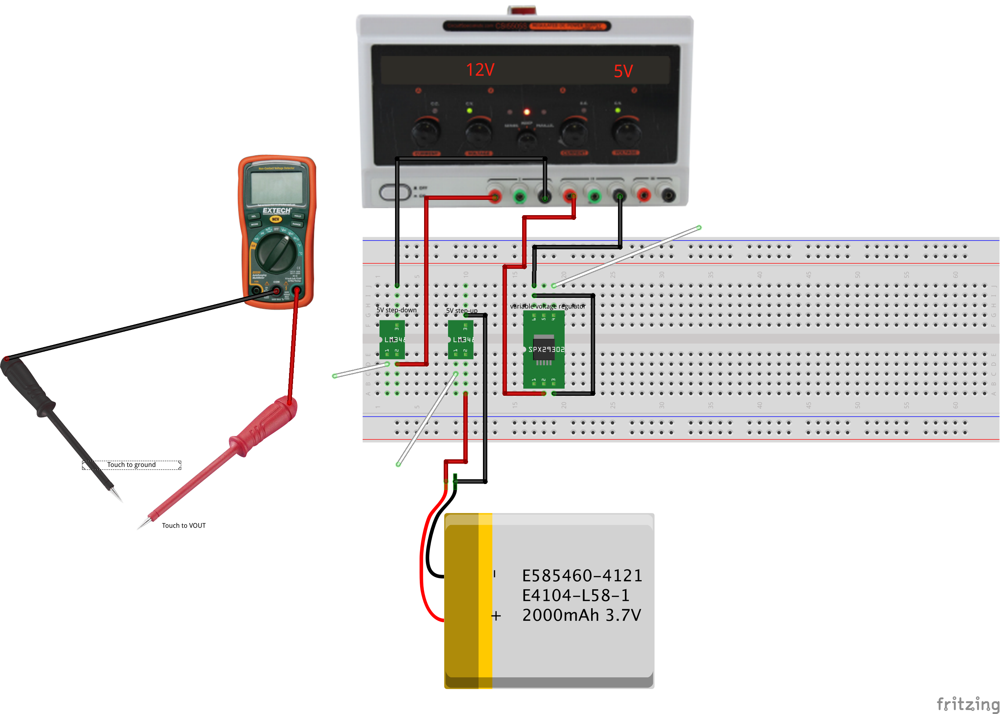
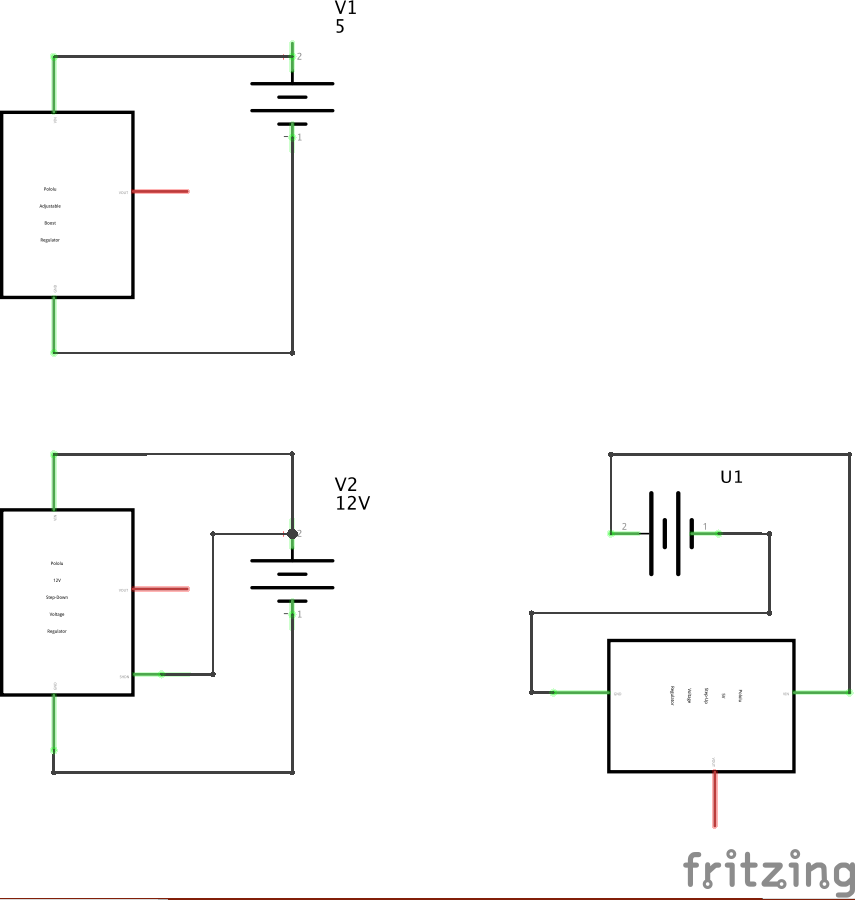
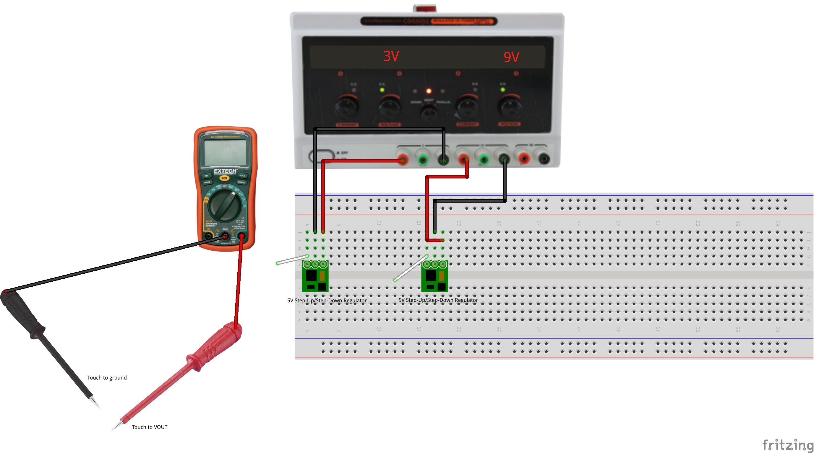
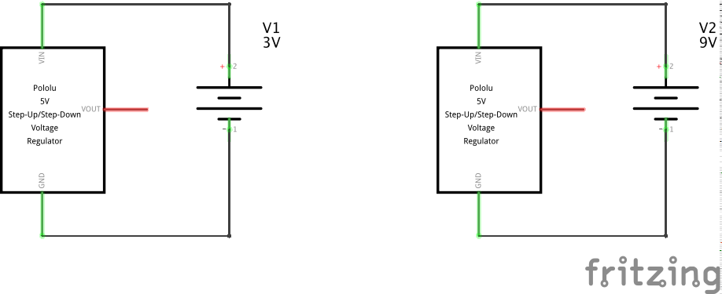
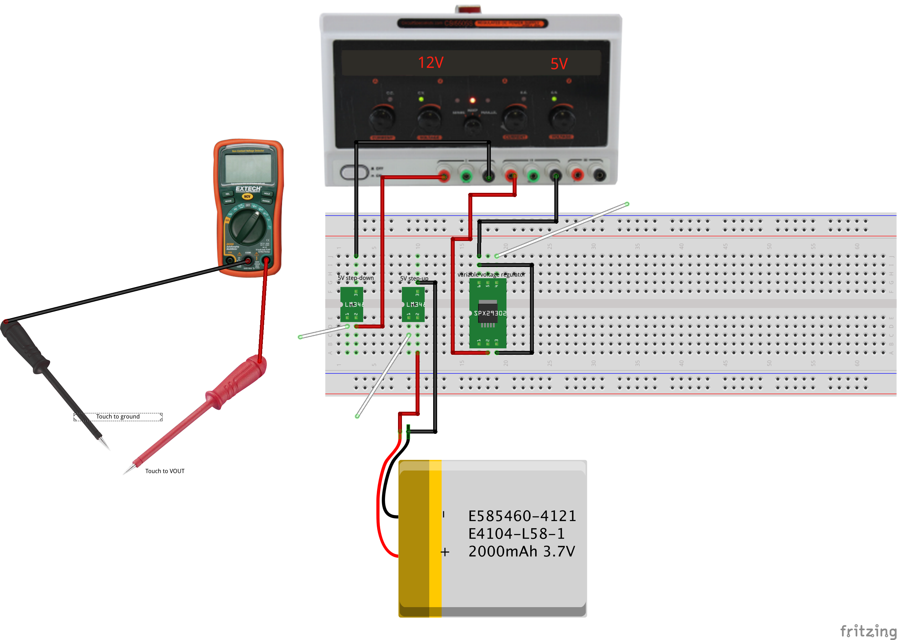
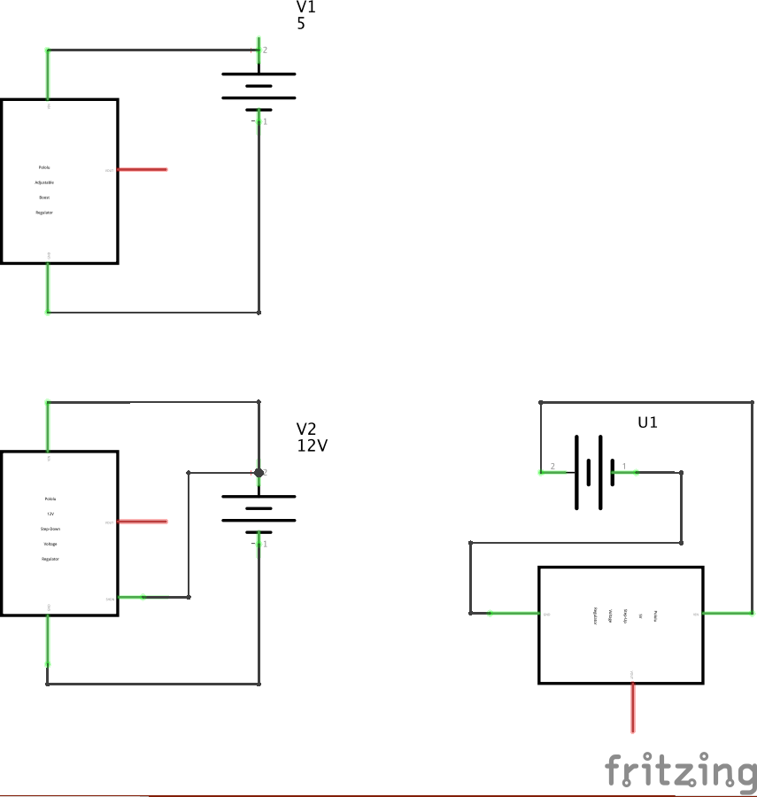

Test different types of voltage regulation components.
Power supplies are the heart of any electronics project, as every circuit needs a source of energy, and usually with very specific electrical characteristics. Most of our circuits will require regulated DC supplies, with energy coming either from a battery or the building electrical system. Unless otherwise specified, regulated means the voltage is controlled to a constant level despite changes in the load.
We will use two basic categories of voltage regulators: linear and switching.
In brief, a linear regulator acts as a variable resistor governed by feedback to keep the output voltage at a fixed level. Linear regulators can only step voltages down, and the excess energy is dissipated as heat. So for example, a 5V linear regulator providing a 500 mA current from a 12V supply creates a 7V voltage drop. That represents 3.5 Watts of heat dissipated in the package, which typically means the package needs a good heatsink to carry that heat away.
A switching regulator chops the input current at a high frequency and either pulses it through an inductor (a coil) to generate higher voltages via inductive effects, or filters it through capacitors and/or inductors to generate a lower voltage. The upside of the complexity is much higher efficiency, and hence less heat. The downside is the potential for supply noise, since the switching frequency can appear in the output. But the efficiency almost always outweighs the complexity in consumer applications, especially for battery circuits.
In the first example of a linear regulator, the the load is only consuming 2.5 Watts of energy while the regulator dissipates 3.5 Watts, so this circuit is operating at only 42% efficiency. Linear regulator circuits are simple to use and inexpensive, so they are applicable for low-power applications or where efficiency and heating are not a problem. The primary advantage is they are potentially low-noise compared to switching regulators, so they often appear in high-fidelity audio applications.
In contrast, switching regulators typically operate as 85% efficiency or higher. The availability has been remarkably eased by the introduction of simple integrated circuits which implement the chopping and feedback function. Consumer 'wall-wart' power supplies used to only use simple linear regulation (or no regulation), but nearly all modern power supplies for consumer electronics are now switch-mode.
A good debugging heuristic for any project is to begin solving problems by checking the power supply. There are many, many possible problems, so for example:
 






